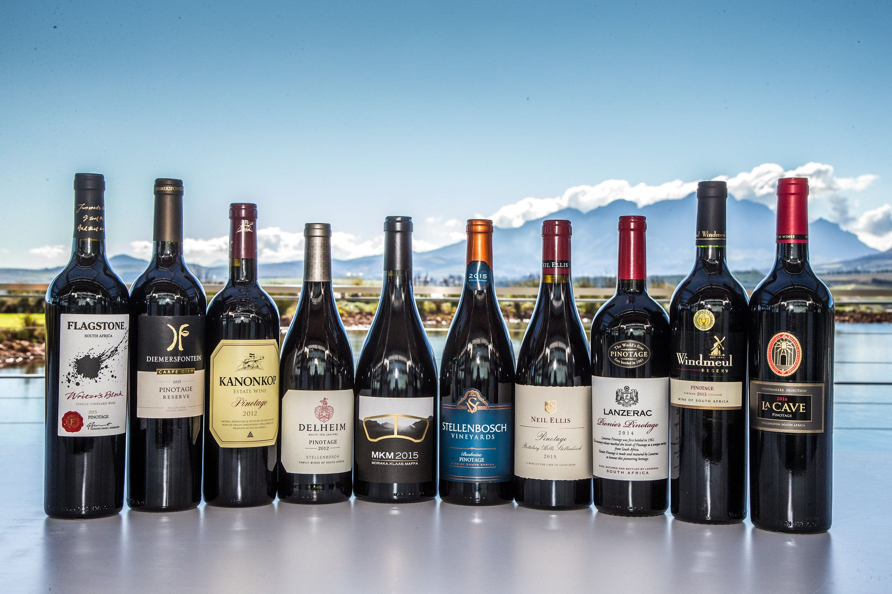
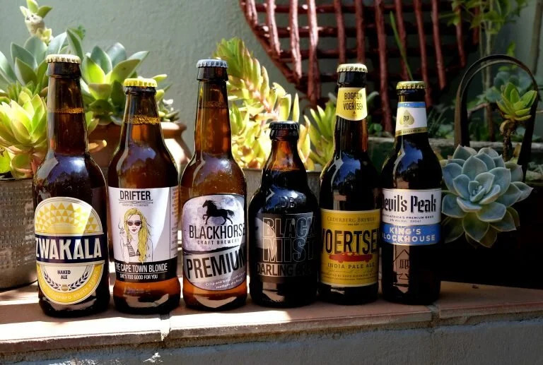
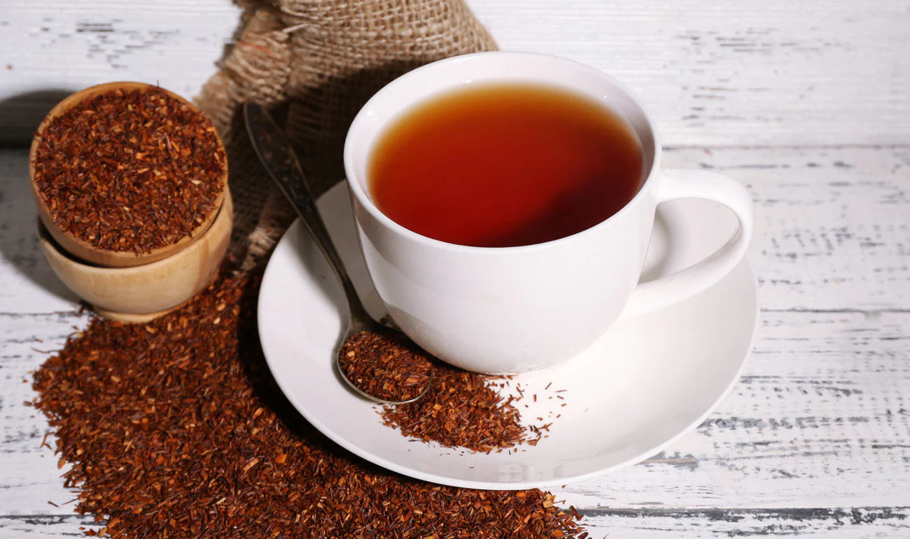
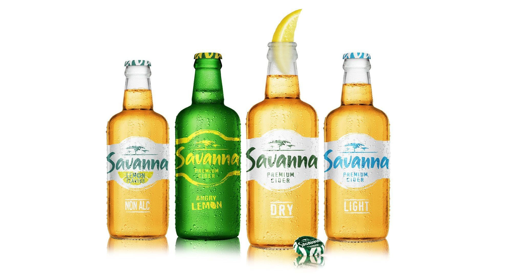

Wine & Beverages
South Africa is renowned for its world-class wines, especially from the Cape Winelands. Varieties like Chenin Blanc, Pinotage, and Shiraz delight visitors with their unique flavors. Wine tours and tastings offer an immersive experience of the region’s vineyards.
Beyond wine, South Africa also produces excellent craft beers and cider. Rooibos tea, native to the Western Cape, is a caffeine-free favorite enjoyed locally and internationally. Exploring South African beverages provides a taste of the country’s rich agricultural and cultural heritage.